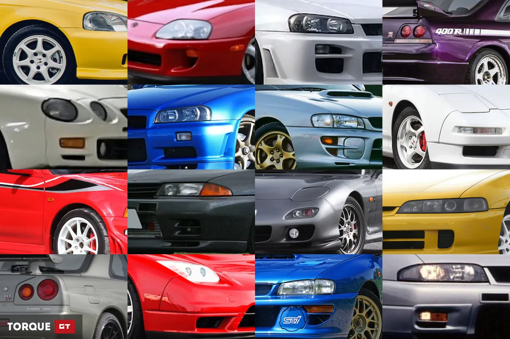
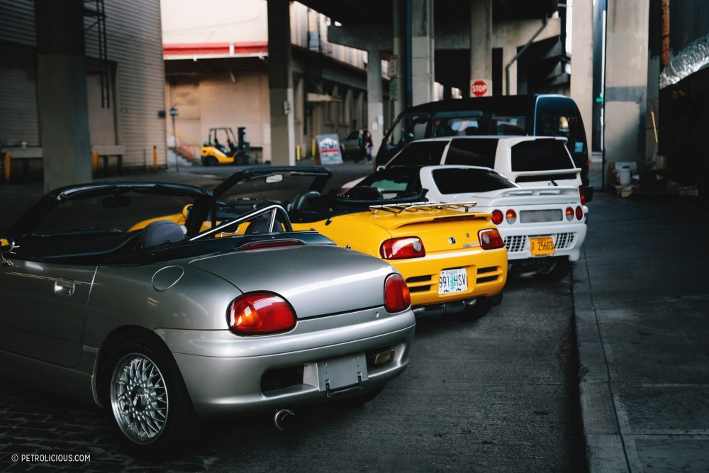
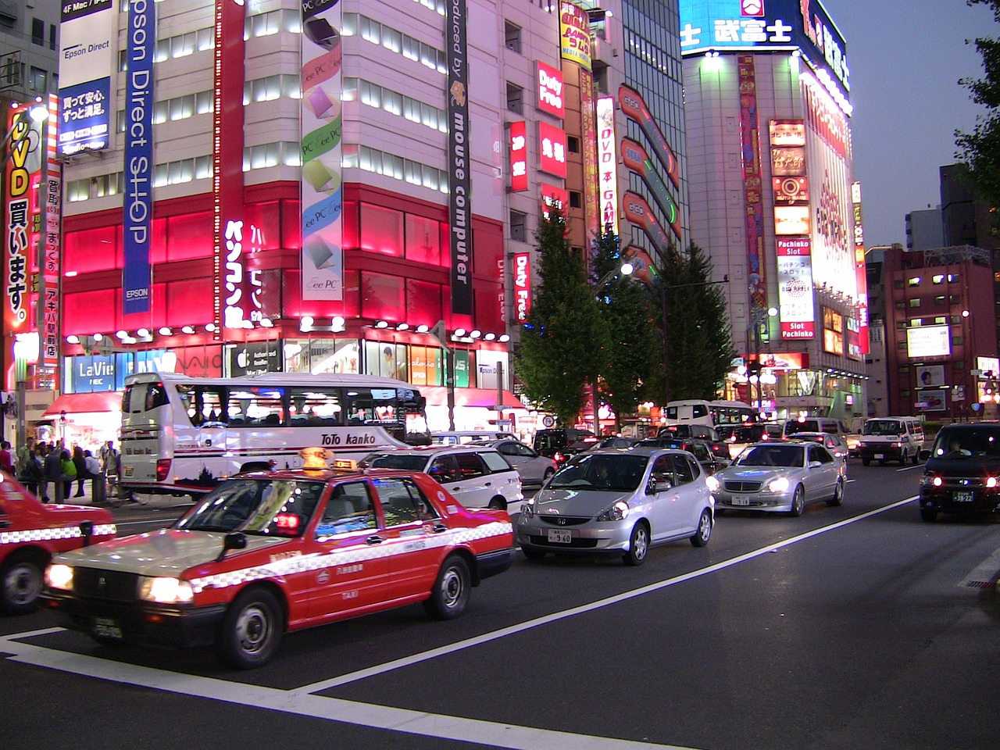
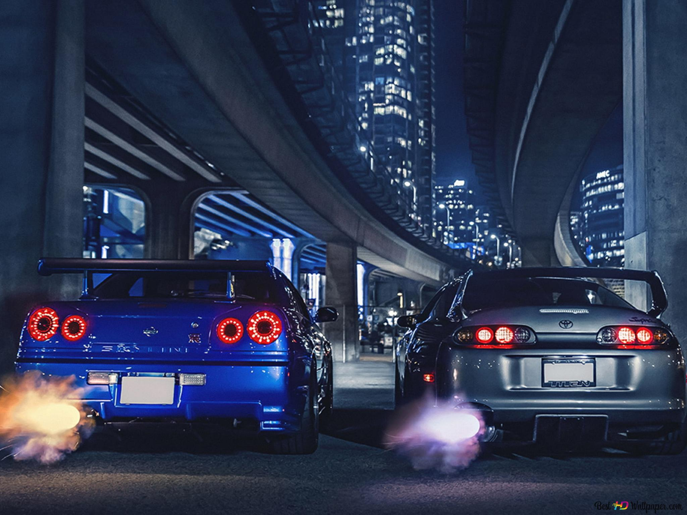
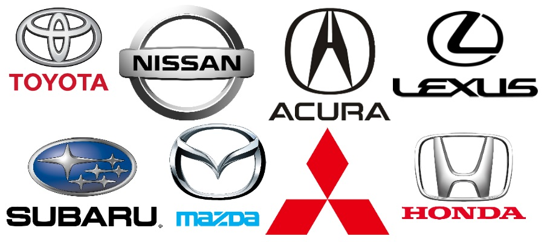
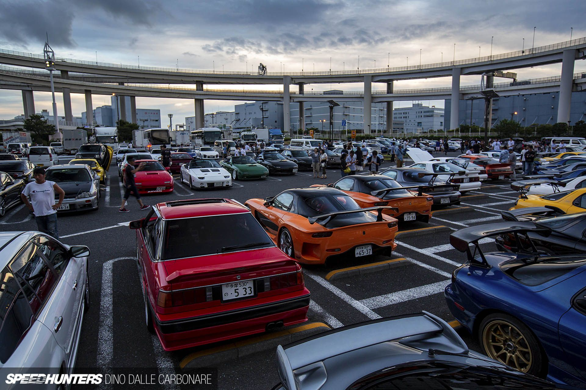

Az oldalról - Japán autók
Ezen az oldalon az japán autók világának bemutatásával kapcsolatos tapasztalataimat,
élményeimet és ismereteimet osztom meg veled. Legyen szó új technológiákról, izgalmas autómodellekről,
vagy éppen a legjobb vezetési tippekről, itt mindent megtalálsz.

Japán Belpiacos Autók: Kivételes Minőség és Innováció
Japán autóiparának hírneve már évtizedek óta magasan kiemelkedik a világ szintjén. Az ország egyedülálló hagyományokkal rendelkezik az autógyártás terén, és a japán belpiacos autók tökéletes példái ennek a mérnöki kitartásnak és minőségi munkának.

Kei autók
A japán belpiac ikonikus Kei autói és kompakt járművei gazdagítják a változatos és érdekes autóparkjukat. Ezek a kis gépek kivételesen gazdaságosak, könnyűek, és kiválóan alkalmazkodnak a szűk utcákon való közlekedéshez. A Kei autók az alacsony fenntartási költségeikkel, kedvező adóbesorolásukkal üzemanyag-hatékonyságukkal vezető szerepet játszanak a városi közlekedésben.

Átlagos Belpiacos Autók:
Az átlagos méretű japán autók kiválóan ötvözik a kompakt kialakítást a tágas utastérrel és a kényelmes vezetési élménnyel. Ezek az autók híresek megbízhatóságukról és alacsony fenntartási költségeikről. Kiemelkedő választékban találhatók, amelyek kielégítik mindenki igényeit.

Sportautók és Luxusautók:
A japán autóiparban a sportautók és luxusautók kategóriájában is élen jár. Ezek a gépek kifinomult dizájnnal, high-tech funkciókkal és kiváló teljesítménnyel büszkélkedhetnek. Japán sportautók, mint a Toyota Supra és Nissan GT-R, a sebesség és stílus megtestesítői, míg a luxusautók, mint a Lexus és Acura, az exkluzivitást és kényelmet hozzák el az autósoknak.

Kiváló Gyártók:
Japán autógyártók, mint a Toyota, Honda, Nissan és Subaru, világszerte elismertek minőségükről és innovációjukról. Azok a cégek, amelyek az autóipar élén állnak, olyan gépeket hoznak létre, amelyek megfelelnek a japán autók legmagasabb szabványainak.

Kultusz és Imádat:
Japán autók iránti rajongás és kultusz olyan mértékű, hogy a világ minden tájáról érkezők összegyűlnek, hogy részt vegyenek a japán autós eseményeken és találkozókon. Az itt található közösség szenvedélyesen osztja meg az autóikkal kapcsolatos élményeiket és ötleteiket.

Befektetés:
A japán autók utáni rajongásért nagyban felelős a filmszakma. A Halálos iramban filmek miatt népszerűvé váló Toyota supra 4. generációja és a Nissan Skyline GTR az évek alatt növelni kezdte az értékét és egyes ritka darabok már a gyári árának többszöröséért váltanak gazdát.
Árak változása az évek elteltével
| Típus | 2016 | 2018 | 2020 | 2022 |
|---|
| Toyota Supra | 16955$ | 26000$ | 32000$ | 59000$ |
| Nissan Skyline | 25000$ | 50000$ | 125000$ | 152000$ |
{kind=link}
{kind=link}
{kind=link}
{kind=link}
{kind=link}
{kind=link}